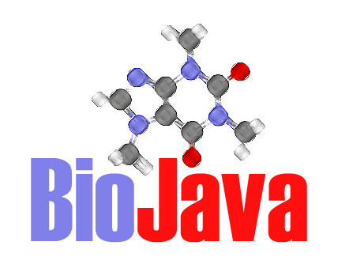
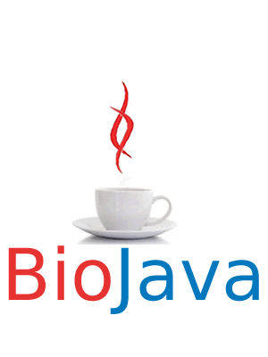

The new wiki site calls for a new BioJava logo. If you have ideas for a new logo then upload your ideas here. As this will be a community process feel free to make comments on this page about which logos you prefer. –Mark 21:28, 1 February 2006 (EST)

Logo1  Nice but we cannot
incorporate the Sun Java logo, that would need to change.
Nice but we cannot
incorporate the Sun Java logo, that would need to change.
Logo2  I like this
one.
I like this
one.
Logo3 
This is good.
I like this one, but I think the sequence on top and bottom is too much - can we have the middle part only? I assume the image is in the copyright of the contributor? andreas
Logo4 
Logo5  5, 6 and 7 are good but we
would need to modify the cup so that we are not using the Sun Java logo.
5, 6 and 7 are good but we
would need to modify the cup so that we are not using the Sun Java logo.
Logo6 
Logo7 
Hi Mark and all. I would tend to go with the Zen look of the BioPerl logo. You are right about the cup as it is right now (deigns 5 to 7), it looks to much like Sun’s. My original idea was to have a DNA helix swirl out of a steaming cup of hot cocoa ;-) Could we stylized the cup with 0 and 1, a,c,g,t ? –Foisys 09:48, 7 February 2006 (EST)
Logo8 
It’s a caffeine molecule! –Rholland 17:45, 8 February 2006 (SGT)
Logo9 
–Jordi 20:31, 9 February 2006 (SGT)
– Count my vote on this one. An idea: how about removing the blue circle and inverting colors white to blue. This would keep the logo in harmony with the background of the page. Just my 2 cents… –Foisys 15:00, 16 February 2006 (EST)
Here are some proposals by Ong Swee Hoe from http://www.gis.a-star.edu.sg GIS in Singapore
Logo10 
Logo11 
Logo12 
Logo13 
Logo14
If you like it I will upload the svg version, so you can change colors
Logo15 
Logo16 
hope you like this one ! (hwd from Taiwan)
I like the shape of this one, but the purple color is too strong. would it be possible to provide a version with e.g. blue or green ? andreas
Logo16.1  (blue + green)
(blue + green)
Logo17 
Dear BioJava Lovers:
Explanation: JAVA cup is popular amongst the java programmers, that is a trademark logo of it. In order to design a BioJava logo, I plan to use the basic concept of Biojava project, where we are implementing the Java power to solve the biological puzzles. So basically we are using the free, Platform independent JAVA language to improve the biological findings.
Here in this logo the JAVA is pouring its essence into BIOlogy, and thereby enhancing the research.
Logo17.1
Dear BioJava Lovers,
Here A new logo of BioJava, that explain everything in silent mode. I receive several comments on my previous logo17 one of them was regarding stability of the JAVA language, so this time I tried to make it stable and make more perfect logo. Here in this logo the JAVA cup is stable ( indicate the stability of the language) and vapor is coming out of it that is in the form of DNA strand it indicate the essence of JAVA into Biology.
Dear biological programmers and Biojava project lovers. I, Jitendra Narayan 1, finally design a logo that correctly explain the biojava project. I need your valuable comments on it.